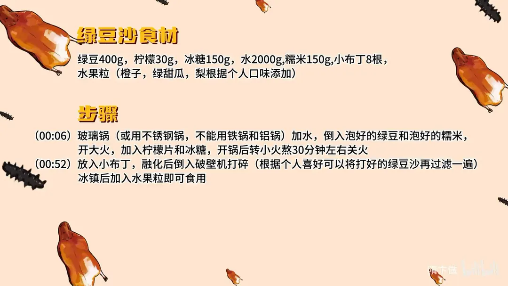

绿豆沙
隋卞一做。绿豆 400g 加糯米 150g、水 2000g、冰糖 150g、柠檬 30g 同煮，开锅转小火熬 30 分钟；关火放 8 根小布丁融化，再入破壁机打成沙，冰镇后加水果粒。忌用铁锅、铝锅。
原视频：https://www.bilibili.com/video/BV1cs421M7UC
食材
绿豆、糯米 等 7 样
| 类别 | 用料 | 用量 |
|---|---|---|
| 主料 | 绿豆 | 400g |
| 主料 | 糯米 | 150g |
| 辅料 | 柠檬 | 30g |
| 辅料 | 小布丁 | 8 根 |
| 辅料 | 水果粒 | 橙子、绿甜瓜、梨，按个人口味添加 |
| 调料 | 冰糖 | 150g |
| 调料 | 水 | 2000g |
步骤
- 煮豆：用玻璃锅或不锈钢锅，不能用铁锅和铝锅；加水，倒入泡好的绿豆和泡好的糯米，开大火，加入柠檬片和冰糖，开锅后转小火熬 30 分钟左右关火。
- 打沙：放入小布丁，融化后连汤倒入破壁机打碎；喜欢更细的口感，可以把打好的绿豆沙再过一遍滤。
- 冰镇装碗：冰镇后加入水果粒即可食用。
小贴士
- 柠檬用来提香、护色，煮的时候一起下锅。
- 糯米让豆沙更稠更绵，别省；泡过的绿豆和糯米煮起来更快出沙。
讲解要点
难度：★☆☆☆☆（新手可做，难点是煮豆时间和最后的稀稠）
为什么这么做
- 不能用铁锅、铝锅：绿豆里的多酚碰上铁、铝离子会发生反应，煮出来的豆沙发黑发乌，玻璃锅或不锈钢锅才保色。
- 绿豆、糯米头天晚上泡上：泡透的豆子细胞壁软化，煮 30 分钟就能开花出沙，也省火。
- 加 150g 糯米：糯米支链淀粉多，煮化后黏性大，豆沙才有稠度和绵的口感。
- 放柠檬片：柠檬酸把酸度压下来，减缓多酚氧化，豆沙不容易变黄；柠檬皮一起打碎还带一股清香。
- 关火后再放小布丁：余温足够化开，奶香不会被长时间加热赶跑，也不容易糊底；顺便补甜、把稀稠调回合适。
- 破壁机打碎、不过滤：豆皮和豆粒一起打散才有「沙沙」的口感，想喝特别细的再过滤一遍。
容易翻车
- 用铁锅、铝锅煮，豆沙发黑，颜色和味道都不对。
- 豆子没泡透直接下锅，30 分钟煮不出沙，越煮越费水。
- 小布丁放在火上一起煮，奶香走失，还容易糊底。
- 水没有一次加够，中途补冷水，豆皮一紧更不容易出沙。
热评补充
- 有观众给出了更省事的版本：15 根绿色心情加 8 根小布丁，煮完直接进破壁机，再用水淀粉勾一点芡，也能出沙沙滑滑的口感。
原片尾卡

原片文案
AI 字幕校准稿
老隋版本的绿豆沙。我们准备泡好的绿豆，就头天晚上睡觉前拿清水给它泡上。放到玻璃锅里边煮，或者不锈钢的都行，就是不能用铁的铝的，它容易发黑。里边加点糯米，这是泡好的啊，克数你们不用记，会给你放到片尾的。这个糯米呢主要是增加一个粘稠度的作用。
开火，加上柠檬片。柠檬也是有它用处的啊，起到一个防氧化的作用——就是有时候我们熬完之后跟氧气长时间交流，它就变成黄颜色。开锅之后转小火熬上 30 分钟，应该就差不多了。冰糖是煮一半忘了搁了，对不起啊，没关系，关火之后搅一搅。
然后我们就有秘密武器了，增加奶香味好多。别人做绿豆沙里边都放奶油，咱们放这个就比较方便，在家里边随便可以取到，超市就可以买出来，效果比奶油不次。就放八根吧，八根这个甜味香味应该就够足了。刚才感觉有点稠，但是一搁完那个小布丁之后，这个稀稠就比较合适了，而且现在也降温了。
不用搅得太狠啊，咱们因为要用那个破壁机把它打碎，沙沙的口感就来了。嚯，闻着就很香。哇，这个味道还可以哟。如果想喝那个特别特别细的，你可以再过滤一遍。我们给它放到冰箱里冰一冰。
嗯，你别说，你还真别说，小布丁感觉还挺合适。它没有我想象的那么甜，因为小布丁如果干吃的话会有点甜、有点腻的那种感觉，但里边完全没有，里面就只有小布丁的那个奶香味和绿豆本身的那个香味，特别特别的搭。因为咱们没过滤，它里面还是有一点点绿豆本身的那种颗粒的，有一点点特别小的嚼劲，冰冰凉凉的，好吃的。
可能因为咱们把柠檬皮也给它打碎了，然后里面含有那种柠檬的清香。然后这里边加了糯米呢，您可以根据个人的需求，就是增稠作用的。如果是在酒店里面，是有那种特别复杂特别复杂的方法的，我们就把可以简化的全部都给他简化掉，但是出来的效果也是不差的。正好夏天了，这道菜也非常适合在家做，大家试一试吧。